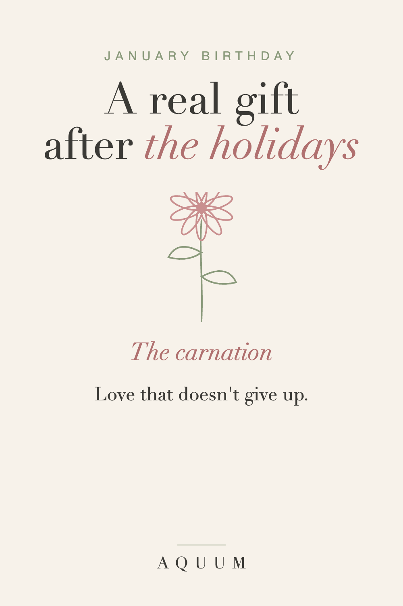

January Birthday Gift Ideas: A Real Gift After the Holidays
2026-09-30
Written by the team behind Aquum, a small birth flower gift shop. How we make money.

A January birthday arrives when everyone is tired, broke and finished with presents. The decorations are coming down, the credit card bill is arriving, and the birthday gets a text and a "we should celebrate soon."
It doesn't take much to make it feel like theirs again.
Start with January's birth flower
January's birth flower is the carnation, and it stands for love that doesn't give up. Carnations were the original Mother's Day flower, and they last longer than almost any other cut flower, which fits the meaning.
January's second flower, the snowdrop, means hope. It blooms while the garden still looks asleep: a lovely message for the first weeks of a new year.
Read the full January birth flower guide.
January birthday gift ideas
- A carnation shirt, mug or tote, wrapped in birthday paper, not leftover holiday wrap.
- Snowdrop bulbs to plant in the fall, so the gift blooms next January.
- A cozy winter kit: their birth flower mug, good tea and a note about what the carnation means.
- A plan for February, when everyone has recovered: a dinner, a show, a day trip.
Keep it separate from the holidays
- Don't combine it. A "Christmas and birthday" gift in December is the thing January people remember, and not fondly.
- Give it on the day, even if the party is later.
- Skip the leftover holiday paper.
Order after the holiday rush
Made-to-order gifts take about a week to be made and shipped in the US, and shipping is slow through the first days of January. For an early-January birthday, order in mid-December; for later in the month, order right after New Year's.
December birthdays have the same problem. See our December birthday gift ideas.